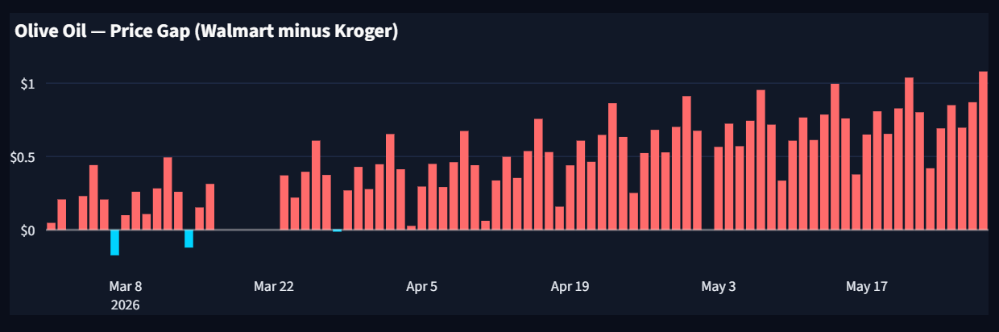
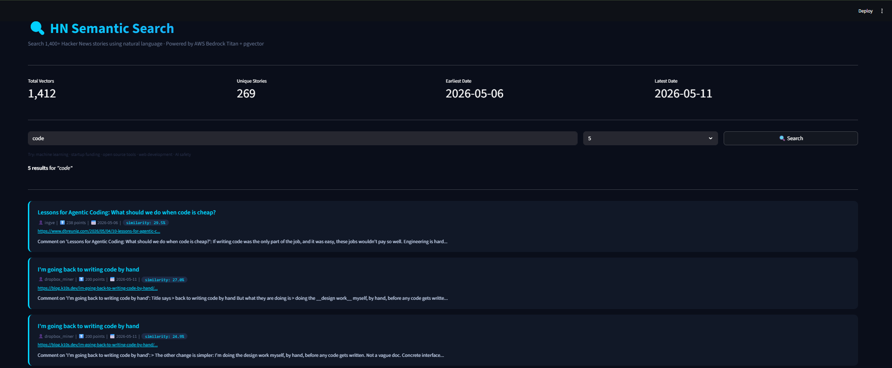
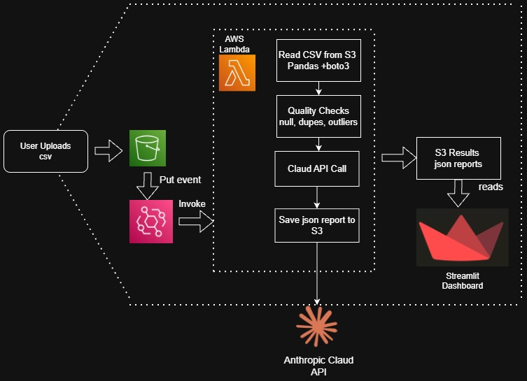

A few things I've built

Retail Price Forecasting
End-to-end pipeline scraping daily Walmart & Kroger prices, forecasting 14-day trends with Facebook Prophet, and visualizing competitor gaps on a live Streamlit dashboard — under 4% MAPE.

HN Semantic Search Engine
Natural-language search over 1,400+ Hacker News stories, powered by AWS Bedrock Titan Embeddings and pgvector similarity search on RDS PostgreSQL — fully serverless.

AI-Powered Data Quality Monitor
Detects missing values, duplicates, and outliers automatically, then explains what's wrong in plain English and recommends a fix — built on the Claude API and Streamlit.

Costco Pricing & Recommendation Engine
Capstone built with Costco Wholesale: modeled cross-price elasticity across product categories and built a constrained volume-optimization engine to guide pricing decisions — presented at CSE Projects Day.